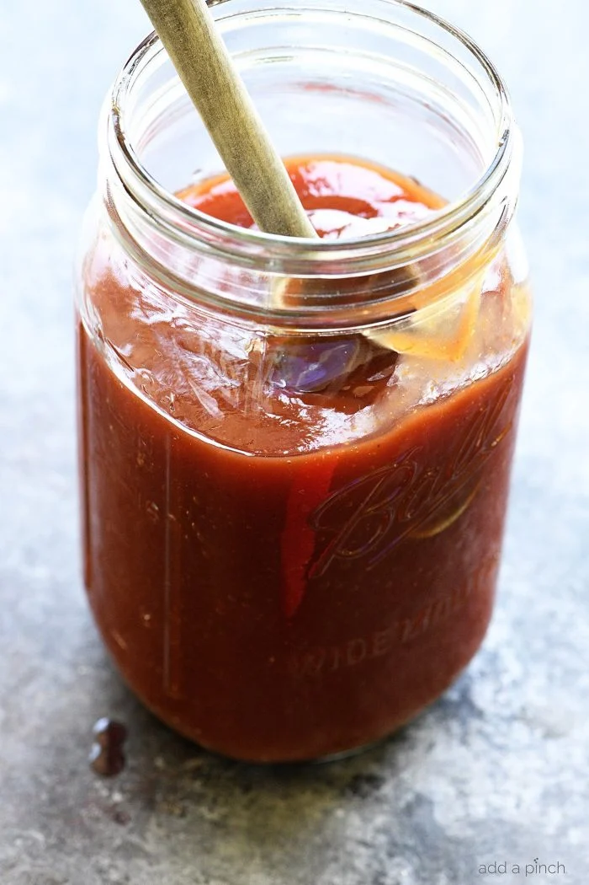

Mmm...tangy AND smokey!
A simple, yet delicious recipe made with things you probably already have in your pantry!
Ingredients:
- 2 cloves of garlic
- One half red onion
- 1 Red Apple
- 1 cup of sliced tomatoes
- 3 ripe plums
- 4 oz Brown Sugar
- 1 tbsp of roasted Paprika
- 2 tbsp of Worcestershire Sauce
- 2 tbsp tomato paste
- 4 oz Apple Cider Vinegar
- 1 Bayleaf
Steps:
- Mix it
- Mash it
- pour it in a stew...heyyyy!